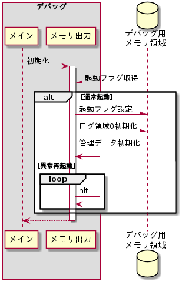
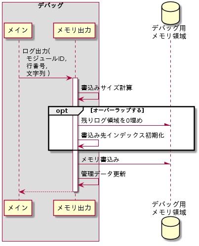

概要
下記制御を行う。
- デバッグ出力用メモリ領域にログ出力を行う。
- 異常再起動時は、デバッグ用メモリ領域のダンプ時間を確保するために、MochiKernelの起動を中断する。
デバッグ用メモリ領域
デバッグ用メモリ領域のフォーマットを以下に示す。
デバッグ用メモリ領域
| インデックス | 内容 | 説明 | |||||||||||||||
| +0 | 起動フラグ |
通常起動か異常再起動か判定するために使用する。
|
|||||||||||||||
| +4 | ログ出力領域 |
下記構造のログを連続して書込む。
|
管理データ
メモリ出力サブモジュールが管理する管理データを以下に示す。
管理データ
| # | 管理データ名 | サイズ (byte) |
説明 |
| 1 | 書込み先インデックス | 4 | デバッグ用メモリ領域のログ出力先インデックス。 |
| 2 | ログ番号 | 2 | 次にログ出力を行う時に付与するログ番号 |
初期化
初期起動時または通常再起動時にデバッグ出力用メモリ領域を初期化する。異常再起動時はハングアップする。シーケンスを以下に示す。

初期化シーケンス
初期化シーケンス
起動フラグ取得
通常起動か異常再起動かを判断するために、デバッグ用メモリ領域から起動フラグを取得する。
デバッグ用メモリ領域初期化
通常起動である場合、起動フラグを0xDEAD_DEADに設定し、ログ領域を0初期化する。
管理データ初期化
下記の通り管理データを初期化する。
管理データの初期値
| # | 管理データ名 | 初期値 |
| 1 | 書込み先インデックス | 0 |
| 2 | ログ番号 | 0 |
ハングアップ
異常再起動である場合、hlt命令を無限実行することでハングアップさせる。
ログ出力
デバッグ用メモリ領域にログ出力を行う。シーケンスを以下に示す。

ログ出力シーケンス
ログ出力シーケンス
オーバーラップ
書込みサイズを計算し、デバッグ用メモリ領域内にログ出力が行えるか判定する。ログ出力が行えない場合は残りの領域を0埋めし、ログ出力をオーバーラップさせるため書込み先インデックスを0に初期化する。
メモリ書込み
デバッグ用メモリ領域の書込み先インデックスが指すアドレスにログを出力する。
管理データ更新
管理データを下記の通り更新する
更新する管理データ
| # | 管理データ | 内容 |
| 1 | 書込み先インデックス | メモリ書込みサイズを加算する。 デバッグ用メモリ領域を超えた場合は、0に初期化する。 |
| 2 | ログ番号 | インクリメントする |